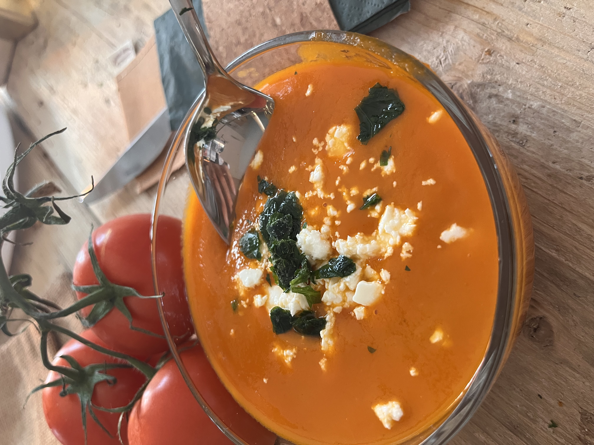

Julia
·
Bergles
Über mich
Diagnosen
▾
Histamin
MCAS
Reizdarm
Selbsttest
Blog
Rezepte
Shop
▾
E-Books
Kunst
App
Empfehlungen
Gespräch
☰

Warme Mahlzeit
Kürbis-
suppe
[Kurze Einleitung von Julia — folgt.]
Portionen
—
Zeit
—
Verträglich für
Histamin · Fructose
Zutaten
Zutaten folgen von Julia
—
Zubereitung
Zubereitung folgt von Julia.
Meine Notiz
[Notiz von Julia — folgt.]
← Weitere warme Rezepte